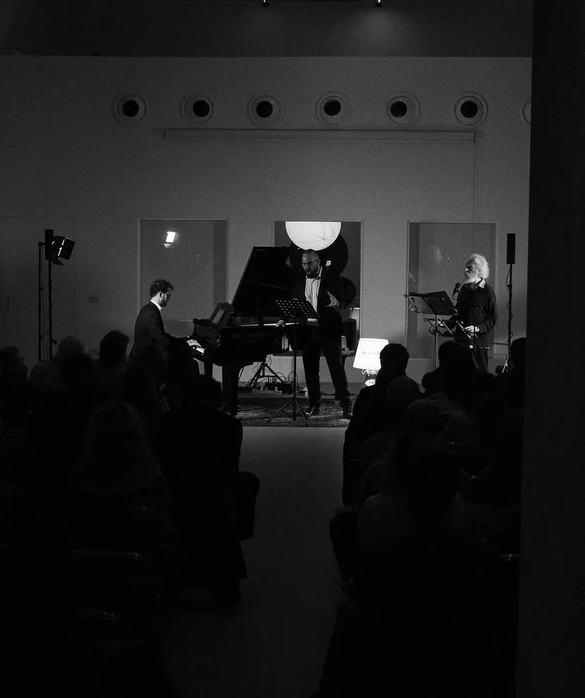

At PRO-FILI
- At the festivalTook part in PRO-FILI, at Pescheria Nuova. On Saturday 10 October at 21.00 he played the piano in FILO’s concert.
Biography
What lies behind beauty? That is the question that struck me, like lightning, after years of study as a classical pianist. Since then I have tried to get inside the score, to understand the relationships between things and how deeply they speak of us.
I try to compose “art music”, as one might call it, naturally drawing together many of the languages of the great composers who came before us and blending them with some influences of our own time. I like to create paths of connection between languages, linking tradition and research. Some of my pieces have been commissioned, performed and recorded by international artists, such as my Piano Concerto n. 1, and published by Universal Edition.
In the IANUA artistic collective he is an author, composer, pianist and director.
The works



Photos from Vedo un suono che si leva: IANUA, 2025. Anatomia di un abbraccio: IANUA, 2026.